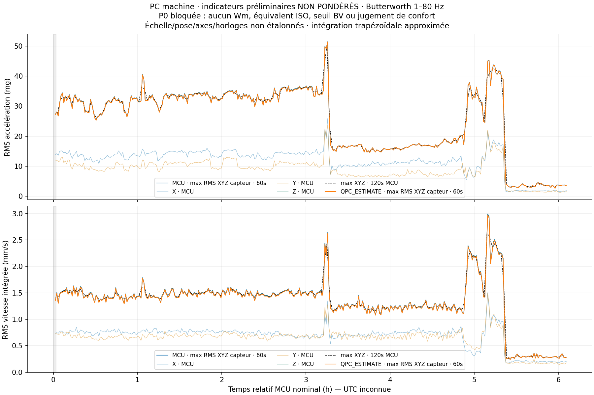

Méthode normative indisponible : P0 bloquée. Les valeurs ci-dessous sont NON PONDÉRÉES, calculées à sensibilité nominale sur XYZ capteur. Aucun Wm, équivalent ISO, seuil BV ou verdict «acceptable» n'est calculé. L'utilisateur ne dispose pas actuellement des clauses nécessaires.
1.42 mm/sMédiane des maxima RMS directionnels · 60s MCU
Vitesse physique intégrée approximée, non pondérée
2.20 mm/sP95 des mêmes fenêtres
Pas un indice de confort ou d'exposition
31.14 mgMédiane des maxima RMS directionnels · 60s
Accélération filtrée1–80Hz, distincte de l'ancienne bande2–25Hz
Comment lire ces valeurs ?
Chaque minute, on calcule le RMS de X, Y et Z puis on retient le plus élevé des trois. Le RMS décrit l'énergie moyenne du signal filtré ; une valeur plus élevée indique une vibration plus intense selon cette méthode, sans prouver une gêne humaine. Les axes du capteur ne sont pas repérés par rapport au navire.
Le point est au plancher du PC machine, avec fixation au double-face annoncée. L'occupation continue et la représentativité du point pour une personne ne sont pas vérifiées. La vitesse physique est obtenue par intégration numérique ; ce n'est pas nécessairement la grandeur équivalente utilisée dans un référentiel.
Évolution réelle pendant l'enregistrement

Temps relatif MCU uniquement, UTC inconnue. Passe-bande Butterworth1–80Hz, gain−3,01dB aux bornes et retard causal. Les11sorties de warmup et10s de stabilisation sont exclues ; fenêtres incomplètes non utilisées pour les quantiles. Aucune lacune n'est remplie par zéro.
Deux bases de temps, une réserve visible
La cadence estimée MCU vaut2661.462Hz, l'estimation tirée du témoinPC2679.516Hz. Sur les mêmes minutes archivées, la médiane de vitesse devient1.415mm/s dans le second scénario. Ce sont des hypothèses de calcul, pas deux campagnes et pas un étalonnage. L'incertitude totale ne se réduit pas à cet écart : amplitude, bruit, fixation et orientation restent non qualifiés.
Ce qui manque pour parler de confort comparé
Un accès autorisé à la définition Wm et aux clauses de méthode/équivalence ISO est indispensable, puis il faudra en vérifier numériquement l'implémentation et les unités. La réponse physique à1Hz, la cadence, le montage et les axes devront aussi être qualifiés. Aucun grade BV, seuil de santé, exposition A(8), causalité machine ou dommage structurel n'est déduit ici.
La source .TR2 a conservé ses octets et passe les contrôles internes. Le digest producteur indépendant en RAM reste perdu après la coupure : cette réserve historique n'est pas levée.